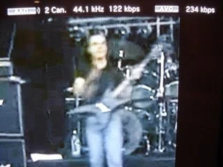

But hey, things have changed and as of revision 1998, mediatomb now supports the H.264 format, which is natively played by the PS3. This means that we no longer need to transcode YouTube videos :)
First of all, you need to check what revision you have:
ubuntu% cd src/mediatomb
ubuntu% svn info
Path: .
URL: https://svn.mediatomb.cc/svnroot/mediatomb/trunk/mediatomb
Repository Root: https://svn.mediatomb.cc/svnroot/mediatomb
Repository UUID: f010a08f-7000-0410-b1fc-cb24403df210
Revision: 2018
Node Kind: directory
Schedule: normal
Last Changed Author: jin_eld
Last Changed Rev: 2018
Last Changed Date: 2009-01-22 19:42:33 +0100 (Thu, 22 Jan 2009)
I'm all set, but if you have a revision older than 1998, you need to update your sources ('svn update') and rebuild mediatomb.
Then, all it takes is changing the YouTube configuration in ~/.mediatomb/config.xml, from:
to:
format="mp4" hd="no" refresh="28800" update-at-start="yes" purge-after="604800" racy-content="exclude">
Although the videos will now be based on the H.264 codec, they will still have the .flv extension, so you also need to remove any transcoding profile for flv files, i.e. something similar to:
Now, restart mediatomb and browse your playlists. As you can see, the videos now appear as AVC (which is another name for H.264):
{kind=link}
This is confirmed by displaying the file properties during streaming: 128 Kbit/s stereo AAC audio and H.264 video :)

{kind=link}
Enjoy!